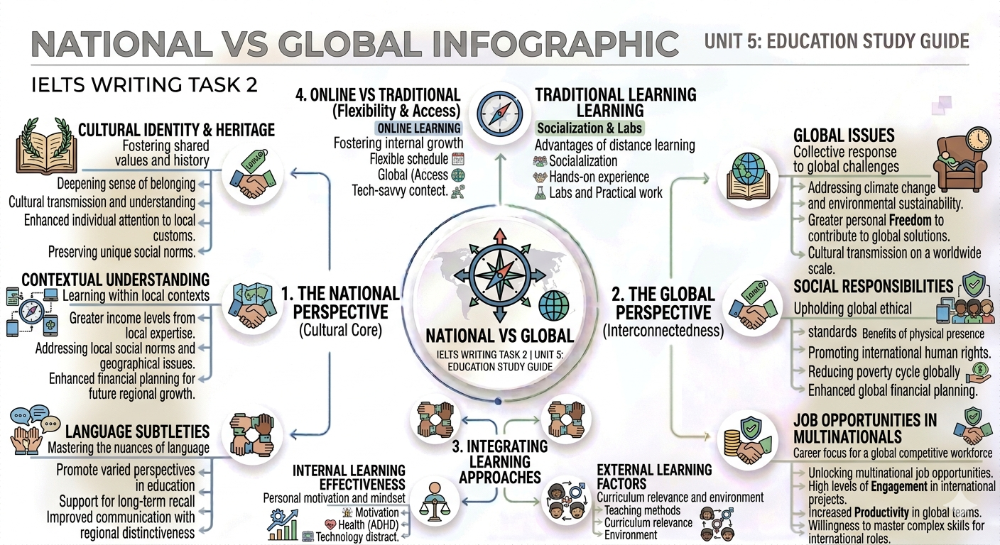

The Interplay of Core Subjects & Soft Skills
Kiến tạo nền tảng kiến thức vững chắc và kỹ năng mềm vượt trội cho mục tiêu IELTS 8.0+.
Môn học cốt lõi & Tư duy phản biện
Việc nghiên cứu các môn học cốt lõi như Khí tượng học hay Khoa học tự nhiên không chỉ cung cấp thông tin mà còn mài giũa kỹ năng tư duy phản biện. Ví dụ, các kiểu thời tiết bị ảnh hưởng bởi vô số yếu tố: nhiệt độ, áp suất không khí, độ ẩm và các luồng gió.
Phân tích chuyên sâu
- ✔ Cause-and-effect relationships: Hiểu rõ mối quan hệ nguyên nhân - kết quả trong các hiện tượng thời tiết.
- ✔ Interplay of variables: Phân tích sự tác động qua lại giữa các biến số.
Solving Complex Problems
Dự báo thời tiết yêu cầu khả năng:
Giao tiếp & Nghệ thuật Ngôn ngữ
| Key Phrase | Vietnamese Meaning | Band 8-9 Collocation |
|---|---|---|
| Express clearly & persuasively | Trình bày rõ ràng, thuyết phục | Articulate thoughts eloquently |
| Active listening | Lắng nghe chủ động | Attentive & critical comprehension |
| Identify nuances | Nhận diện các sắc thái | Decipher implicit messages |
Học văn học là một ví dụ điển hình. Nó không chỉ là đọc sách, mà là sự rèn luyện kỹ năng active listening và phân tích các complex themes, symbolism.
Hệ thống hóa kiến thức - Sơ đồ Mindmap

🏫 Tại trường học
Học sinh mài giũa kỹ năng mềm thông qua:
- • Extracurricular activities (Hoạt động ngoại khóa)
- • Group projects (Làm việc nhóm)
- • Debates & Presentations (Tranh luận & Thuyết trình)
💼 Trong kinh doanh
Kỹ năng mềm là yếu tố sống còn cho:
- • Building relationships (Xây dựng quan hệ)
- • Leadership & Management (Lãnh đạo)
- • Career advancement (Thăng tiến sự nghiệp)
Nurturing Soft Skills at Home
Role Models
Cha mẹ là hình mẫu về khả năng conflict resolution và time management để con cái noi theo.
Household Duties
Việc nhà (meal preparation, chores) giúp trẻ học được tính accountability và trách nhiệm.
Personal Care
Tự chăm sóc bản thân tạo dựng self-confidence và self-image tích cực trong xã hội.
✍ Practice Task (Band 8 Preparation)
Dịch câu sau sang tiếng Anh sử dụng các cụm từ đã học (Click để xem đáp án):